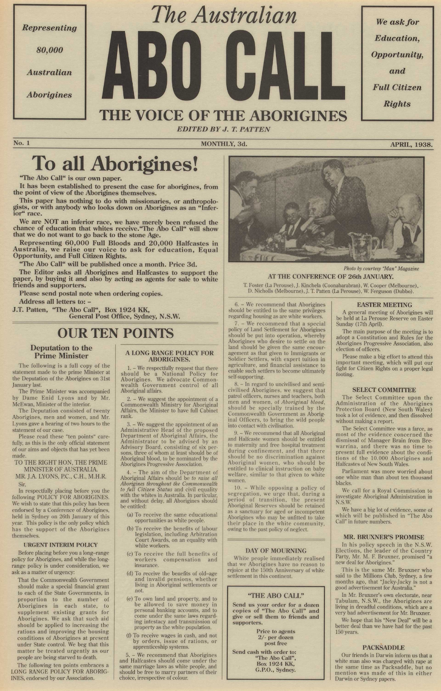

The Day of Mourning was a culmination of all the discrimination, exclusion, and prejudice faced by the Aboriginals. Although the protest did not have a powerful short-term impact, it was significant in the long run. It inspired and paved the way for Aboriginal Civil Rights movements throughout Australia and all reconciliatory measures taken by the government are testimonies of its significance.
On the 26th of January 1788, the First Fleet (a fleet of eleven ships hailing from Britain) disembarked at Sydney Cove and established a convict settlement. Although initial interactions between the Aboriginals (the indigenous inhabitants of the land) and the Britishers were peaceful, the outsiders brought disease to the land and desired to expand their settlements. The Aborigines disliked their intentions and soon violence erupted. Eventually, by 1838,, due to the combined effects of massacres (such as the Myall Creek massacre) and widespread disease, the Aboriginal population was reduced by about 80% (from 300,000 to 58,000).
The Australian Protection Board (established in 1883 to manage ‘reserves’ and look after the welfare of the Aboriginals) developed a policy to remove Aboriginal children of mixed descent and place them in white families to merge them into the wider society. They did this to diminish the growth of the ‘wild half-caste race’(Aboriginals).
The six British colonies (New South Wales, Victoria, Western Australia, Tasmania, Queensland, and Southern Australia) federated to form Australia. Aboriginals were excluded from public referendums and discussions about drafting the constitution even though they were the first peoples of Australia.
The inception of the White Australia Policy. Although the policy was formed primarily to cease non-white (especially Asian) immigration to Australia, the Aboriginal population was also largely affected by this policy as they were thought to be an inferior ‘dying race’. It set a prejudiced belief against Aboriginals and was a precursor for the stolen generations.
The legislation of the Aborigines Protection Amending Act 1915 granted full power to the Australian Protection Board to remove an Aborigine child from his/her family without having to prove a violation of the Neglected Children and Juvenile Offenders Act 1905 in court. It overwrote the Aborigines Protection Act 1909 which stated that the Board could assume custody of a child only if the court found the child to be neglected.
William Cooper, the founding member of the Australian Aborigines’ League, sent a petition to the then Prime Minister Joseph Lyons requesting it to be forwarded to King George VI. The petition implored the government to improve Aboriginal wellbeing and ensure their representation in Parliament. The government acknowledged receipt of the petition but didn’t forward it to the king as requested.
The sesquicentenary(150th) anniversary of Australia Day was a joyous day for Australians marked by some spectacular celebrations - spirited parades, sporting competitions, and acts organised in Sydney. But for some groups of Aboriginals, it marked a day of retaliation against insensitive treatment. And so, as organised by the Aborigines Progressive Association, they gathered to protest. Some highlights were the symbolic funeral march (Aboriginals marched in silent protest from Town Hall to Australian Hall after the parade had passed to convene for the Australian Aborigines Conference chaired by Jack Patten), the placards declaring - “Aboriginals Claim Citizens Rights”, and powerful speeches that listed their grievances and their demand for 10 civil rights.
Prime Minister Joseph Lyons met 20 Aboriginal delegates to hear a proposal for an Aboriginal national policy. The delegates proposed a separate ministry of Aboriginal Affairs, Commonwealth control, and application of fundamental rights for Aboriginals. Joseph Lyons rejected the proposal citing that Commonwealth control wasn’t possible under the Constitution.
The issuing of - The Australian ‘ABO CALL’. It claimed to be a newspaper that was ‘The Voice of The Aborigines’. Edited by Jack Patten, the paper restated some of the Aboriginal demands that were denied and raised awareness of their poor treatment.
The 1967 referendum victory granted the Australian federal government the power to legislate laws explicitly for Aboriginals and gave Aboriginals the status of citizenship.
The Aboriginal Land Rights Act of 1976 enabled those in the Northern Territory to claim ownership of land based on traditional connections. It was the first time the Australian government officially recognised the Aboriginal land-ownership system.
On June 3, 1992 the Mabo Decision recognised traditional ownership of Murray Island by a group of Torres Strait Islanders and in the latter half of 1993, the Native Title Act recognised native titles and established mechanisms to claim native entitlements.
The inception of the ‘closing the gap’ initiative (an initiative that aimed at ameliorating the education and health of Aboriginals) and the formal ‘apology to the stolen generations’ by Prime Minister Kevin Rudd were some important reconciliatory measures taken by the Australian government.